Distance Based Single-Channel Target Speech Extraction
Author: Runwu Shi, Benjamin Yen, Kazuhiro Nakadai
Abstract: This paper aims to achieve single-channel target speech extraction (TSE) in enclosures by solely utilizing distance information. This is the first work that only utilizes distance cues without any speaker-related information for single-channel TSE. Inspired by recent single-channel distance-based separation and extraction methods, we introduce a novel model that efficiently fuses distance information with time-frequency (TF) bins for target speech extraction. Experimental results in both single-room and multi-room scenarios demonstrate the feasibility and effectiveness of our approach. Additionally, this method can also be employed to estimate the distances of different speakers in mixed speech.
D1: Fix room & mic
Sample 1

Mixture input
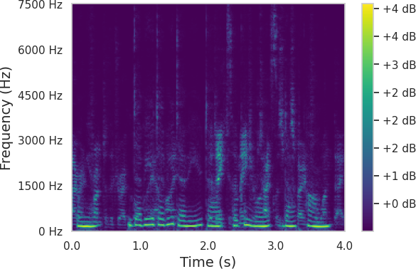Clean speech at 0.77m
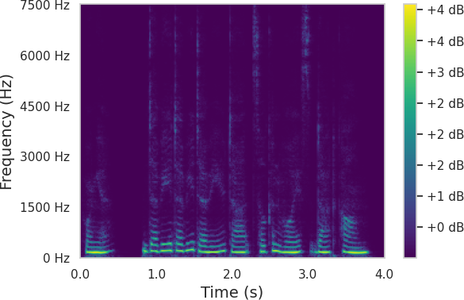Clean speech at 3.17m
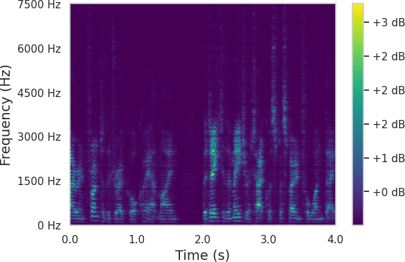Query distance 0m
Query distance 0.625m
Query distance 1.25m
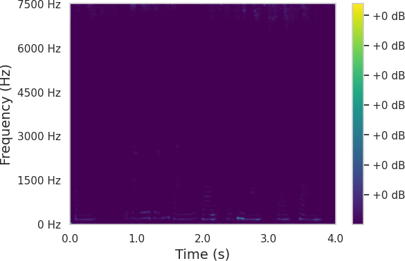Query distance 1.875m
Query distance 2.5m
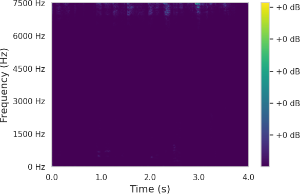Query distance 3.125m
Query distance 3.75m
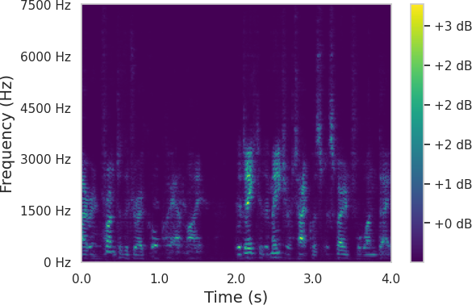Query distance 4.375m
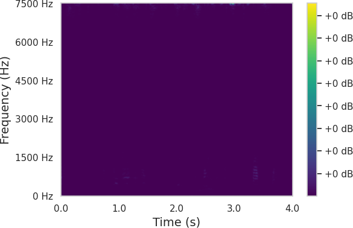Query distance 5m
Sample 2
Mixture input
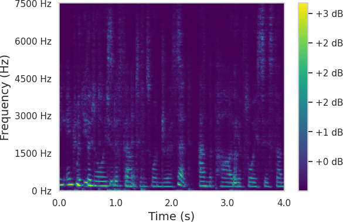Clean speech at 2.81m
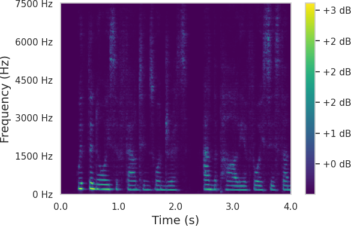Clean speech at 3.35m
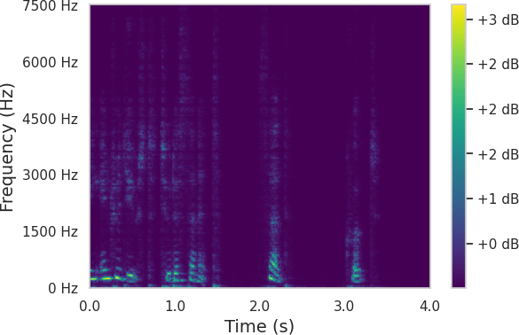Query distance 0m
Query distance 0.625m
Query distance 1.25m
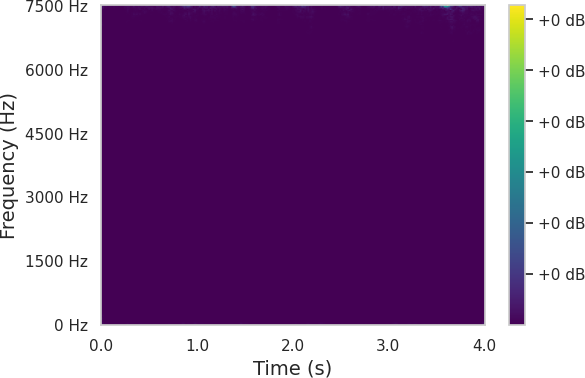Query distance 1.875m
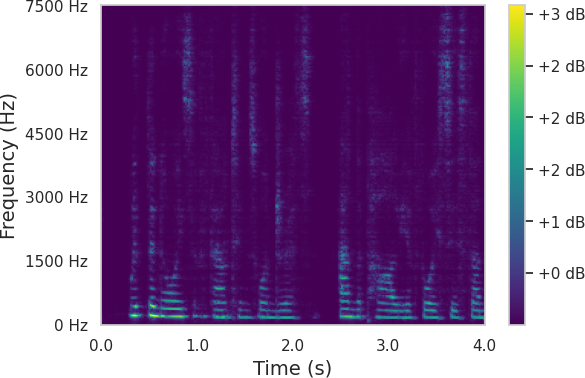Query distance 2.5m
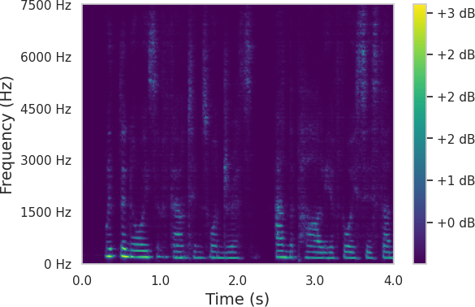Query distance 3.125m
Query distance 3.75m
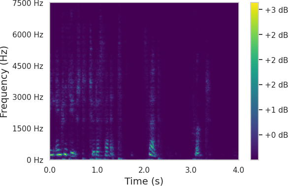Query distance 4.375m
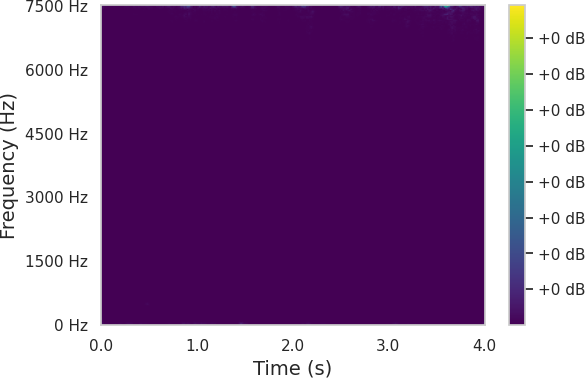Query distance 5m